Civic Cross-Ties: the public-connection evidence chain
One permanent ordinary-city line, three public cross-ties: from public fact to expiring permit to restoration.
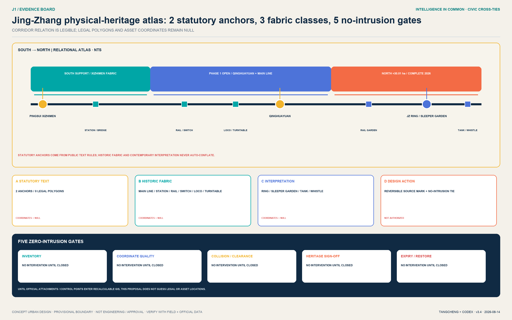
One permanent ordinary-city line; three civic cross-ties that reconnect east and west. The north-south trace of Jing-Zhang Railway Heritage Park is the baseline of memory, walking, cycling, blue-green space, and staffed service that AI cannot occupy. Zhongzhiyuan, AI Origin, and Dazhongsi become respectively a Safety Garden Cross-Tie, Rights-Sharing Cross-Tie, and Station-City Acceptance Cross-Tie. A cross-tie is a public-space concept and spatial metaphor for reconnecting neighbourhoods, campuses, parks, and station districts; it is not a proposal to enter operating railway land or determine engineering alignments.
NO PASS, NO AI. PASS is the proposal's shorthand for Public Acceptance & Safe-Street Standard, not a statutory standard or government certification. Version 3.4 upgrades it from a negative checklist into a PASS spatiotemporal-permit compiler. It reads public existing conditions, the no-AI ordinary baseline, spatial constraints, and service gaps; asks AI for at least three spatial-and-time options with explicit uncertainty; lets planning, transport, accessibility, operations, and affected publics exclude unacceptable choices; and outputs only an expiring permit with place, time, footprint, kit, staff, validity, and restoration. At expiry, red-line trigger, or any failed PASS condition, the plug-in is removed and the ordinary garden, public arcade, or fully staffed service returns.
One-Page Jury Conclusion: From an Existing Park to an Acceptable AI City
Do not rebuild the park. Do not copy a campus. Do not let technology display substitute for city-making. The Beijing Municipal Commission of Planning and Natural Resources describes the Jing-Zhang Railway Heritage Park as an approximately nine-kilometre corridor serving nine subdistricts and towns. Its operative railway, Line 13, urban roads, fragmented cross-connections, multiple ownerships, and phased implementation are the real planning condition Source. The Beijing Gardening and Greening Bureau confirms that a 2.5-kilometre, 16.8-hectare first phase is already open, conserving railway remains while stitching east-west movement and connecting universities and research institutions Source. The starting point is therefore an existing public realm whose civic value must not be eroded by AI, not a blank masterplan inside a rough provisional boundary.
Urban space and AI operate in sequence. Layer one is the permanent ordinary-city baseline: railway memory, continuous walking and cycling, three east-west stitches, blue-green sponge space, universal access, and visible staffed service. Layer two is a time-limited AI plug-in: it may occupy only a reversible service band that never blocks basic movement and always has a named owner, physical stop, appeal, and expiry date. Remove every AI device and the street must still work. That is the minimum meaning of an AI-Native city.
The three key areas are deliberately non-interchangeable. Zhongzhiyuan sequences public garden, interpretation porch, controlled test loop, and logistics to manage safety gradients. The AI Origin Community sequences campus and park pores, Open Outputs Street, shared ground floors, and everyday lanes to connect open-source translation with daily life. Dazhongsi sequences station-city foyer, four-quadrant ground stitching, the 100-metre acceptance street, and an international living room to serve high everyday footfall. They share PASS, but their plans, sections, people flows, logistics, and failure-recovery baselines are different.
Strategy Choice: Why Not a Showcase Belt or Three Isolated Test Yards?
| Strategy | Structural problem identified | Required city-making action | Verifiable output | Choice |
|---|---|---|---|---|
| Technology showcase belt | Festival visibility risks reducing citizens to spectators | Add year-round ordinary public service and an after-use | Continuous no-AI route and staffed service | Not the primary strategy |
| Three isolated test yards | Professional control severs the public spine and everyday life | Connect heritage mobility, cross-stitches and shared ground floors | Independent acceptance per area and comparable evidence | Retain only controlled back-of-house testing |
| PASS public-acceptance city | AI responsibility and failure recovery are usually invisible | Keep the ordinary city permanent; admit AI only to a reversible service band | Four conditions, project owner, field rehearsal and stop receipt | Adopt |
PASS wins not because the design team awards itself points, but because it answers how the place works without AI, where AI enters, who accepts it, and how the city restores after failure.
AI Planning Loop: From Site Conflict to Expiring Spatial Permit
PASS never lets AI decide roads, parcels, or people's rights. It makes the professional and public choices before those decisions comparable, traceable, and reversible:
| Step | Input / action | Bounded AI role | Human decision | Spatial output |
|---|---|---|---|---|
| 0 Ordinary baseline | Walking, accessibility, staffed service, blue-green space, daily uses | Generates no replacement | Confirms the non-negotiable baseline | ordinary_baseline |
| 1 Encode the problem | Public conditions, field-verification list, gaps, and constraints | Flags conflicts, missing data, and uncertainty | Professionals approve the problem definition | verified / public-map / hypothesis / field-pending |
| 2 Generate options | No-AI baseline + exclusions + reversible kit | Produces three place × time × kit options | Model ranking is never a decision | option_A/B/C |
| 3 Select together | Professional review, accessible walk, staffing, affected-public input | Records trade-offs and residual risks | Named people sign and retain veto | selected_option + reasons |
| 4 Issue expiring permit | Sole A, on-duty R, footprint, validity, restoration | Drafts a readable permit | Opens only after every professional and public gate closes | place / time / footprint / kit / staff / expiry / restore |
| 5 Restore or renew | Operating metrics, complaints, incidents, maintenance | Compares baseline and target; never auto-renews | Renew, revise, or remove | Equipment inventory + ordinary-baseline receipt |
The compiler must produce different results in the three cross-ties. Zhongzhiyuan compares all-day enclosure, time-shared access, and full separation, retaining the ordinary garden and safe logistics. AI Origin compares an internal hall, distributed shared ground floors, and a festival market, selecting traceable shared ground floors. Dazhongsi compares bridge-first, indoor-experience-first, and ground ordinary-service-first. Without engineering and ownership data, only the third survives as a low-regret reversible first hypothesis. All comparisons are synthetic tabletop work—not field performance.
Identity, Regional Interfaces, and International Communication
The identity is an operating instrument rather than a detached logo. A railway-ticket/passport-shaped admission card carries four P-A-S-S cells: teal means the ordinary-city baseline is intact, orange means a time-limited trial, and red NO PASS means stop and restore. Every sign, desk, and scenario card provides Chinese and English text, pictograms, and a paper/staffed route. A phone, account, or face can never gate basic access.
Jing-Zhang exports interfaces rather than a masterplan: a public-acceptance problem card toward Huairou Science City; an emergency-stop, human-handover, and exit evidence pack toward Beijing E-Town; talent, research, and prototype co-acceptance interfaces toward Future Science City and Beiwei Community; and privacy-preserving PASS scenario packs toward Beijing-Tianjin-Hebei. These are proposed collaboration interfaces, not claims that any counterpart has joined.
The international message is one sentence: NO PASS, NO AI — the city works before, during and after AI. By walking notice, staffed service, co-testing, appeal, and restoration within one hundred metres, a visitor can understand Jing-Zhang's contribution without first learning Chinese planning vocabulary: not the district with the most AI devices, but a city experiment that gives the public admission, interruption, and restoration rights over AI.
Design Basis and Source List
The proposal first fixes the authority boundary of its evidence. The repository brief brief/public-brief.md and official announcement establish the project vision, the wording of the three spatial scales, approximate announced areas, and design tasks Source Standard. The rights-cleared Agent taskbook supplies the three positionings, five functions, Three Zones and Two Wings, and six Agent tasks Source Standard.
Urban design, regulatory detailed planning, and land-use classification follow the local reference snapshots Standard Standard Standard. No verifiable official text is available for the architectural design-depth document, so it remains a registered data gap Standard.
Three background references calibrate public-AI applicability. The Interim Measures for Generative AI are cited only when a service provides generated content to the public within their statutory scope; numerical appeal deadlines remain self-imposed project targets Standard. Article 39 of the Barrier-Free Environment Law is not generalized beyond its enumerated public-service settings Standard. State Council General Office document No. 45 of 2020 is a policy reference for parallel traditional and smart service; its 2020–2022 milestones are not presented as a live 2026 project duty Standard.
The site package, Source Registry, and processed fact pack serve respectively as the rule base, the source-usability decision layer, and the reading guide Source Source Source.
The current SITE_BOUNDARY and three KEY_AREA polygons come from the repository's provisional rough geometry Source Source. They are recorded with official_boundary=false and geometry_role=provisional_constraint in Spatial data and Spatial data. They support generation, self-check, display, and discontinuity discussion only. The announced scale of approximately 11.4 km² does not become a precise redline because this package recalculates 11.41 km². When official polygons arrive, land use, buildings, roads, green space, public space, phasing, figures, PDFs, HTML, and every spatial metric must be rebuilt. Existing conditions, ownership, heritage, transport, municipal infrastructure, and regulatory-plan gaps are registered in assumptions.json Depth.
Six international cases are used only as mechanism references: one-north for multi-district work-live-learn integration Source; Maria 01 for adaptive reuse and community Source; STATION F for a large startup campus with stage-specific programs Source; MaRS for linking research, enterprise, capital, and public mission Source; Seoul AI Hub for specialist incubation, training, and exchange Source; and Kendall Square for long-term governance of mixed use and public space Source. None supports a project boundary, statutory control, tenant placement, investment amount, or implementation commitment here.
The structure is not a post-rationalization of “one spine, three commons, and two wings.” It starts from five urban tensions that must still be tested. North-south railway memory may be continuous while daily east-west connections remain fragmented, so the design combines a memory spine with three types of cross-connection. Innovation resources are concentrated, but public access remains unverified, so open ground floors and staffed service points become the commons interface. AI scenarios may be visible while accountability remains obscure, so notice, data, decision, and appeal become four spatial gates. Renewal too often begins with added floor area, so the proposal prioritizes retain-and-adapt, reversible insertion, and delayed decisions until official data arrives. All three key areas host AI functions, yet safety gradients, porous sharing, and a station-city living room give them different spatial grammars. The first two tensions remain working hypotheses and require public existing-condition data, field surveys, and official drawings.
Version 3.4 updates the existing-condition date to 2026 and prints status directly on the drawings. Beijing's gardening authority publicly reports Phase-2 supporting works complete: about 30.01 ha of comprehensive construction from Qinghuadonglu to the North Fifth Ring in the north, supporting works in the south, and the Jing-Zhang Ring, rail garden, rail/tank-car/whistle installations, and a fishbone slow-mobility network Source. The 2024 Phase-2 report now explains the development sequence rather than a current “planned” state Source. The official response on the Line-13 barrier, a nearby entrance north of the North Third Ring, and unresolved cross-line coordination remains the Dazhongsi relationship diagnosis Source. These facts support where to verify and why to stitch; they do not authorize a bridge, tunnel, road, or entrance alignment.
The organiser's announcement frames the roughly 192.1-hectare Zhongzhiyuan area as a “garden AI district”, integrating buildings, green space and water, Fifth-Ring mobility and Qinghe culture Source. Public information for AI Origin defines a roughly three-square-kilometre Wudaokou-centred near-campus innovation ecosystem linking universities, institutes, carriers, and a first stop for AI talent Source. These facts support names, relationships, and design tasks—not enterprise commitments, parcels, or performance claims; specific extents, enterprises and carriers from a now-unavailable page are no longer treated as evidence.
The Dazhongsi chain is more specific. Beijing Subway lists the station's A/B exits and in-station lifts, ramps, tactile guidance, and accessible toilets; the ground access chain still requires field verification Source. Public feedback on the Lanjing renewal unit records concerns about sunlight, green space, noise, light pollution, and 700 square metres of community facilities, while the planning response requires integration with the Jing-Zhang green corridor to the east Source. Later public planning conditions place the renewal unit south of local street 3, west of the Line-13 land boundary, north of the North Third Ring and east of Fangheng Plaza; local street 2 is at least 18 m and streets 4/5 at least 15 m, with green-space penetration and above/below-ground slow connection to Dazhongsi Station Source. These are relationship and width controls; the public attachment is not georeferenced here as official GIS. The first pilot is therefore a ground ordinary-service cross-tie without a new bridge or tunnel, not an invented street.
OpenStreetMap under ODbL is frozen into three north-up study windows with a zero-degree edge pad: only contiguous source-vertex runs inside each declared bbox are retained. The strict clip keeps 901 sampled features Metric Metric, with input hashes and data dates recorded per window Source. Public-map context, organizer provisional constraints, and design actions use three separate legends. The Dazhongsi public station window does not coincide with PROV-KEY-003, so they are disclosed side by side and never forced into an overlay. The public map is not labelled as an official condition, statutory or heritage-control boundary, ownership record, or engineering alignment.
Within those public-coordinate windows, design-actions-public-context.json draws three conditional options, one desktop preference and one traceable section line per site: nine options Metric, three conditional preferences Metric, and three A—A traces Metric. The read-only permit runner joins the same option_id to the spatiotemporal-permit table and checks the study window, sampled public-building envelopes, desktop exclusion zones, rights/engineering nulls, and section references. The three preferred actions return zero coarse desktop collisions Metric. Zero means only that a bbox pre-screen found no obvious collision; it proves no rights, fire, traffic, heritage, field-clearance, station-exit, engineering, or permit condition. field_performance remains null for all three.

Three-Level Scope Framework
The three levels are one evidence chain from strategy to space to verification, not three unrelated drawings. The 43.6 km² Coordinated Research Area asks how Haidian's AI innovation chain can collaborate across institutions. The approximately 11.4 km² Overall Design Area asks which urban spaces can carry that collaboration. The three Key-Area Detailed Design Areas ask how reversible small projects can test it. This transmission is governed by Depth and Depth, with Spatial data, Spatial data, and Metric as machine-readable evidence.
The overall structure is named “one commons spine + three differentiated commons + two collaboration wings + N auditable nodes.” The spine is the Jing-Zhang memory and open-intelligence commons. The three commons are the Zhongzhiyuan Safety Governance Commons, AI Origin Open-Source Translation Commons, and Dazhongsi AI-Native Living Commons. The two wings are the Zhongguancun Technology Services Wing and Xiaoyue River Scenario Enablement Wing. N begins with twelve scenario nodes. Provisional boundaries remain low-contrast dashed constraints; corridors, nodes, east-west stitching, and operating relationships carry the composition.
Each level has spatial outputs, operating outputs, and review thresholds. The coordinated level produces an ecosystem map and collaboration protocols. The overall-design level produces land use, public space, walking and cycling, and conceptual capacity units. The key-area level produces scenario cards, project lists, and risk prerequisites. Any metric that cannot be recalculated from GeoJSON or a credible source remains pending official data. Any project dependent on ownership, roads, heritage, municipal infrastructure, or approvals cannot be described as certain construction in the phasing plan Depth.

Coordinated Research Area: Industry and Future City Research
“Intelligence in Common · Jing-Zhang” is not a visual label pasted onto AI. Its identity question is how technology becomes public capability. The logo direction uses two parallel rail lines, three commons nodes, and one open gap. The rails represent Jing-Zhang history and future collaboration, the three dots represent the three zones, and the gap welcomes future contributions. Heritage navy, commons teal, and verification orange form the palette. All type uses open-source or system fonts, and the mark is original geometry rather than an appropriated corporate identity. The naming, English title, and visual system answer Source without implying government recognition.
The industrial ecosystem follows a five-step loop: problem intake, capability team formation, sandbox validation, public review, and responsible scaling. Zhongzhiyuan focuses on models, compute, toolchains, safety evaluation, and standards governance. AI Origin focuses on university outputs, open-source collaboration, intellectual property, incubation, and talent services. Dazhongsi focuses on Agents, intelligent devices, content, consumption, and international demonstrations. The Technology Services Wing supplies legal, capital, standards, and international interfaces; the Scenario Enablement Wing supplies real problems, public experience, and user feedback. This turns the five functions into spatial and operating roles rather than a company list or output-value promise Depth.
Regional collaboration is organized through open interfaces for problems, capabilities, validation, and translation rather than unverified radiating lines on a map. The Jing-Zhang Belt can contribute public scenarios and auditable protocols. Beiwei Community and Future Science City can be conceptual interfaces for talent, basic research, and prototypes. Huairou Science City can connect large scientific facilities and frontier research questions. Beijing E-Town can connect embodied intelligence, vehicles, and advanced-manufacturing validation. The Beijing-Tianjin-Hebei corridor can accumulate cross-city scenario cards, evaluation methods, and exit rules. These are collaboration suggestions only; real participation requires open calls, agreements, and named accountable parties.
Selected lessons from the six cases are translated rather than copied: one-north shows how public space can link specialist districts; Maria 01 suggests adaptive reuse and community before new construction; STATION F suggests stage-based services; MaRS joins research, capital, customers, and public mission; Seoul AI Hub combines incubation with training and exchange; Kendall Square requires persistent stewardship of active ground floors, open space, and mixed urban life. Jing-Zhang's distinctive addition is public auditability: every test discloses purpose, data limits, human review, and exit conditions instead of trading invisible surveillance for convenience.
Overall Design Area: Urban Renewal and Regulatory-Plan-Level Urban Design
The renewal principle is retain-and-adapt first, reversible insertion second, and discussion of added capacity only after statutory information arrives. One shared provisional boundary is topologically partitioned into seven conceptual carriers: research, education, culture, housing, community services, commercial services, and park green space Spatial data Depth. The building layer expresses only small-scale capacity and public-interface prototypes Spatial data; it does not classify unknown existing buildings for demolition or construction. Total floor area, FAR, Building Coverage Ratio, height, and setbacks remain pending official data Depth Depth Depth.
Four cross-checking systems organize the Overall Design Area. First, a continuous Jing-Zhang commons spine combines culture, ecology, walking and cycling, and events. Second, three conceptual east-west stitching lines serve Dazhongsi Station, the campus-park interface at AI Origin, and Zhongzhiyuan's Qinghe interface. Third, twelve scenario nodes are bookable, auditable, and closable. Fourth, shared basic services support differentiated specialist districts. Green and public spaces are primary infrastructure for encounter, testing review, and public questioning rather than residual land Metric Metric.
Regulatory-plan-level depth is controlled through three columns: known, recommended, and pending confirmation. Land-use codes, submitted geometry, and derived areas are recalculable knowns. Spatial structure, public-space nodes, and operating mechanisms are Conceptual Recommendations. Road redlines, statutory control lines, intensity, height, engineering, utilities, ownership, and heritage controls await official material. This preserves design depth without crossing the statutory boundary described by Standard.
Detailed Design of Key Areas

All three areas share one Public Acceptance Passport but never copy one spatial form. The passport is their common governance interface; the three prototypes are the urban design. Zhongzhiyuan makes stoppability spatial through a garden, observation gallery, and test loop. AI Origin makes provenance and withdrawal spatial through an outputs street, rights desk, and Contributors' Living Room. Dazhongsi makes staffed access and appeal spatial through four thresholds in a station-city living room. The four conditions are not a weighted score. If any condition remains open, AI stays off and the site restores its ordinary walking, staffed service, or non-AI display baseline.
The three detailed-design sheets use approximate 1:1000 conditional prototypes. They do not turn rough provisional boundaries, unknown station exits, or unknown buildings into existing facts. Each sheet delivers six kinds of evidence together: a low-contrast concept base; separation of ordinary public circulation and test logistics; one building–ground floor–public-realm section; locations for staffed service, physical stop, and appeal; three states—no AI / time-limited run / failure recovery; and the project's owner, cost band, gate, first evidence, and exit condition. Spatial relationships are ready for professional deepening; field placement still requires official data and sitework.
Zhongzhiyuan: Safety Governance Commons
Zhongzhiyuan is positioned as “visible full-stack independence and safety governance.” Within provisional area Spatial data, it forms one loop, one hall, and three platforms: a Qinghe innovation-garden loop; a model-safety and standards interpretation hall; and validation platforms for model evaluation, embodied intelligence, and urban services. Reversible pavilions, canopies, outdoor test markings, and bookable trials are preferred along the Qinghe interface without presuming river control lines or engineering conditions. The building strategy prioritizes retain-and-adapt and uses ground floors and public space to connect standards formation, testing, explanation, and appeal. External connections indicate directions only until Fifth Ring Road, street, and fire-safety information is available.
Its spatial prototype is a four-level gradient: public garden edge, observation and interpretation gallery, controlled test loop, and secure research back-of-house. Public circulation never crosses test logistics. The observation gallery carries accountability signage, staffed supervision, emergency stops, and exits. The test loop opens only with booking, enclosure, and a safety officer. Three initial Conceptual Recommendations are a safety-governance foyer, removable test surfacing, and a public review table on the Qinghe edge. They pass through G1 professional review, G2 safety sandbox, and G3 time-limited pilot. Unclear river, fire, or ownership conditions trigger exit.
Its acceptance prototype is the Safety Acceptance Garden. A 2.4-metre rain-garden buffer, 3.0-metre continuous step-free clear route, 1.8-metre controlled service bay, and 2.4-metre observation porch are self-imposed concept targets—not surveyed sections or engineering standards. The site operator is the sole A; the test safety officer leads on-site R. The first acceptable evidence is not a robot demonstration video, but a dual-path rehearsal co-observed by a disabled-person representative in which the physical pause signal works and ordinary garden passage stays open. Loss of control, obstruction, or an absent owner restores the no-AI public garden.
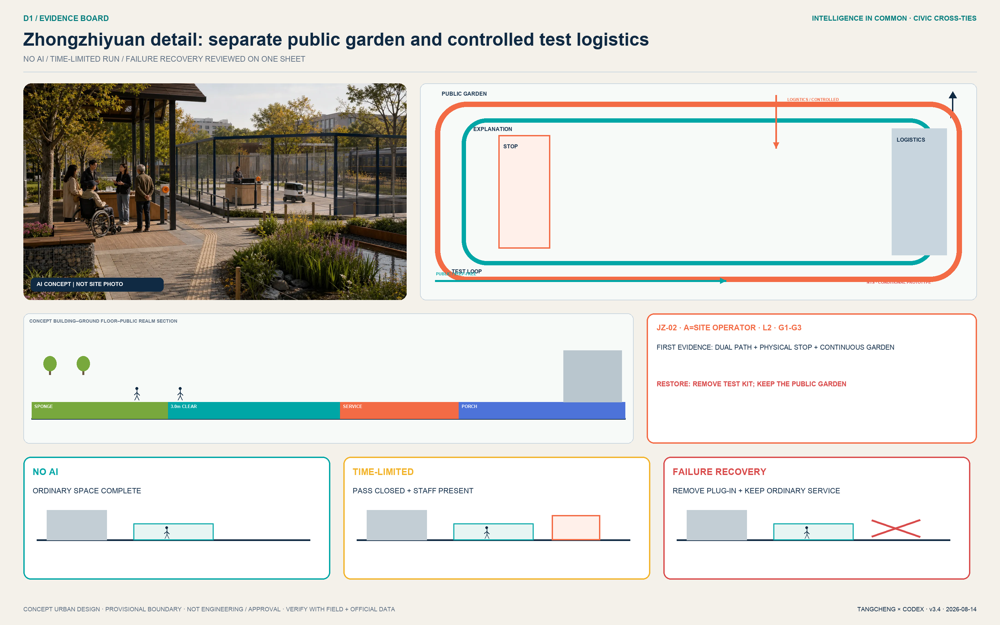
Beijing AI Origin Community: Open-Source Translation Commons
Around Spatial data, AI Origin combines an Open Outputs Street, Contributors' Living Room, and near-campus everyday network. The street links release, intellectual property, legal services, incubation, and small demonstrations. The Contributors' Living Room records verifiable code, datasets, standards, and public contributions rather than corporate advertising. The everyday network adds learning, childcare, health, night-time collaboration, and walking connections. Renewal relies on micro-interventions, open ground floors, and time-sharing; campuses, parks, and privately controlled spaces are treated through interfaces and negotiation rather than predetermined alterations.
The stitching grammar is campus and park pores, the Open Outputs Street, shared ground floors, and near-campus everyday lanes. The street is not a single retail strip: release, rights clearance, collaboration, and daily services alternate along a walking sequence. Every release point displays copyright provenance, a human contact, and a withdrawal route. Initial Conceptual Recommendations are a traceable outputs window, Contributors' Living Room, and accessible co-creation table. Pilots begin only after park boundaries, ground-floor fire requirements, time management, and resident-representative consultation are resolved.
Its acceptance prototype is the Rights & Contribution Arcade. One side is an outputs window with visible source, licence, and version; the centre is a staffed rights desk; the other side is a long co-acceptance table for contributors and the public. Ordinary passage and paper consultation always remain open. The park operator is the sole A; a rights editor and accessible-session host carry content and on-site R. The first acceptable evidence is one test output completing provenance check, public challenge, contributor correction or withdrawal, and version logging. Unclear rights, failed withdrawal, or blocked passage restores a public arcade without AI recommendation.
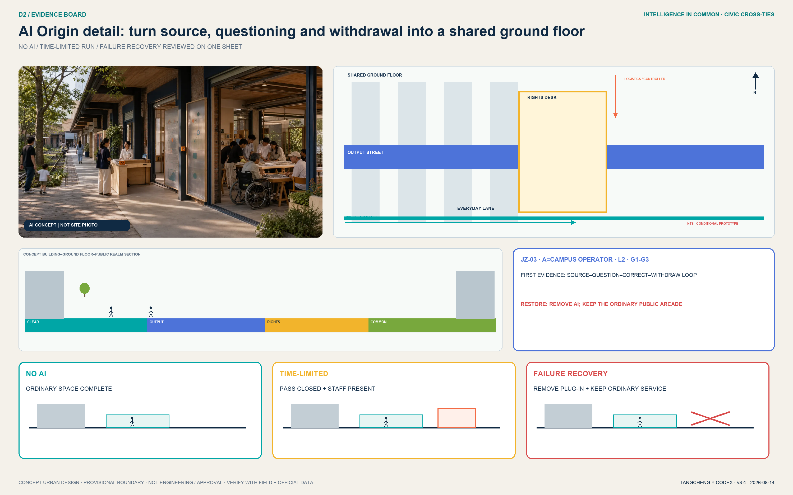
Dazhongsi: Station-City Acceptance Cross-Tie
Dazhongsi no longer begins with an unverified “future plaza.” It begins with the publicly traceable relationship among the station, heritage park, renewal unit, and North Third Ring Road. The submitted Spatial data remains an organiser-provided provisional constraint and cannot substitute for the public Dazhongsi study window; the two are not forced to coincide before an official boundary arrives. Phase one tests only a station-city foyer, four-quadrant ground stitching, a 100-metre Public Acceptance Street, and parallel staffed service. It prioritizes continuous crossing, cycle order, and accessibility without preselecting bridges or tunnels. One hundred metres is a transferable acceptance sequence—not an existing road, parcel, or engineering alignment.
The site operator is the sole A and the staffed-service lead carries R. The first acceptable evidence is one participant completing an ordinary service without a phone, account, or face recognition, transferring to a person within the self-imposed 30-second target, and receiving an appeal and rollback receipt. A failed digital entrance, unattended human desk, or unlogged exit immediately restores fully staffed dual-desk service.
The first pilot is managed by a measurable and procurable dossier that never invents a price:
| Dossier slot | Required before G1/G2 | Current status |
|---|---|---|
| Candidate location | Continuous ground service chain among station exit, park, and renewal unit | Public relationship known; exact line awaits survey and official drawings |
| Exclusions | Never occupy basic passage, tactile route, fire access, entrances, cycle parking, or operating railway | Conditional design; no engineering permit |
| Field verification | Two peak counts, full accessible walk, night light/noise log, staffed-shift interview | Pending; template prepared |
| Minimum kit | Four gates, two parallel service desks, one continuous accessible line, one physical stop, one appeal/restoration receipt set | Concept minimum; construction quantity pending |
| Minimum staff | One on-duty service owner + one human operator; no unstaffed opening | Self-imposed operating floor |
| Cost and quotes | L1 reversible signs/furniture/shifts; L2 temporary kit/local interfaces; three-quote and variance slots | No currency entered; no quotations received |
| O&M and data | Open/close check each shift; weekly independent acceptance; facility counts, stops, appeals, and restoration only—no continuous personal traces | Operating draft, awaiting named signatures |
| Acceptance and exit | Baseline, target, sample, frequency, evidence file, independent acceptor, signatures; any red line restores dual staffed service after equipment inventory | Tabletop pass is not field pass |
Ninety days are an evidence sequence, not a publicity countdown. Days 0–30 establish field evidence and the no-AI baseline. Days 31–60 cover offline assembly, staffing, and stop/restore rehearsal. Days 61–90 allow limited operation only after site, accessibility, safety, accountability, and public gates are signed. If a formal cross-line connection remains unavailable, the pilot neither waits for nor pretends to solve a bridge or tunnel; it first proves, within an approved ground-service footprint, that ordinary service continues, AI can stop, and the public can appeal.
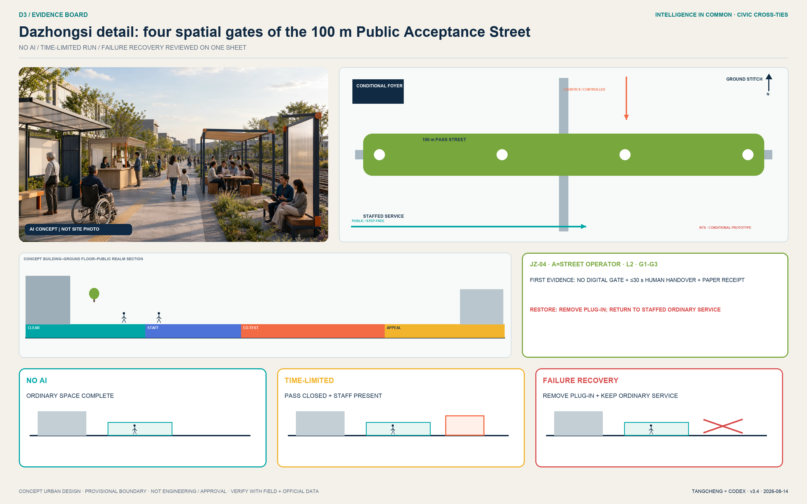
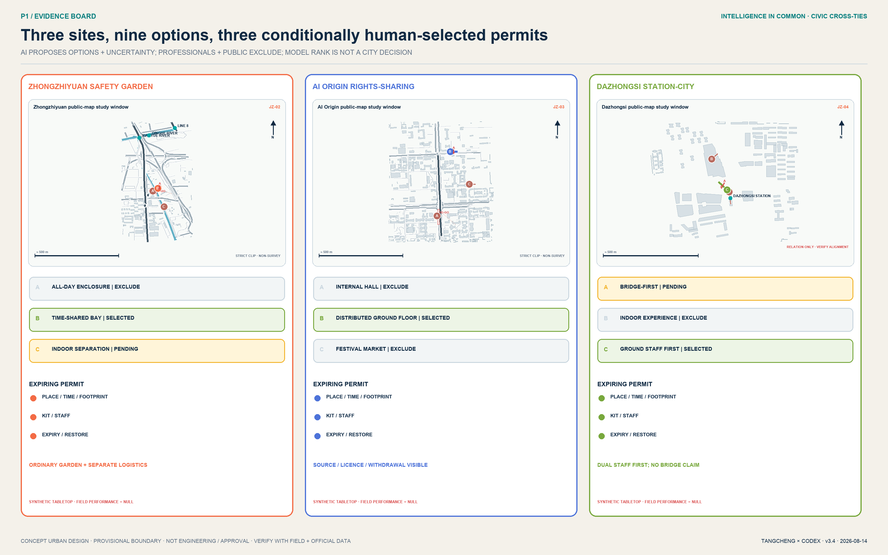
The Public Acceptance Street turns governance clauses into four bodily legible thresholds. The 0–20 metre Notice Porch discloses purpose, data, accountability, and open hours. The 20–45 metre Dual Service Desk places human and AI service side by side; basic access requires no phone, account, or face. The 45–75 metre Public Acceptance Court lets residents, older and disabled people, professionals, and operators co-test. The 75–100 metre Appeal and Rollback Porch logs correction, deletion, pause, and exit. One continuous step-free route, tactile guidance, clear passage, and rest points connect all four; equipment is removable, reusable, and cannot obstruct movement. The prototype, four thresholds, and human-fallback target are recorded by Metric Metric Metric.
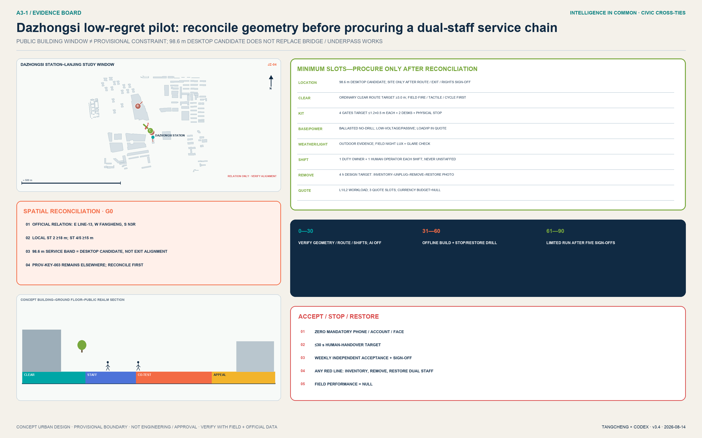
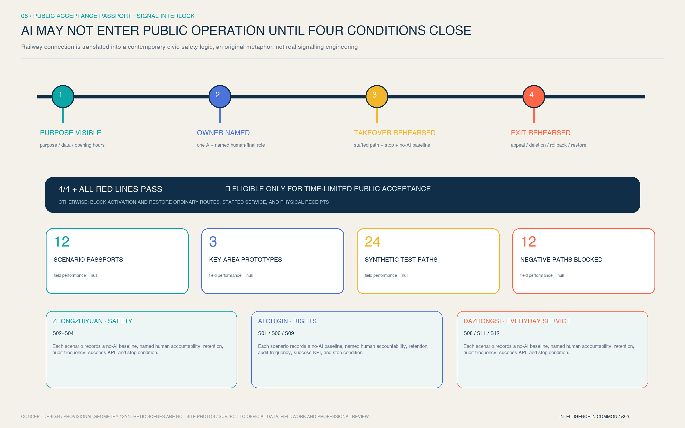
Its value is not another AI photo spot but a city-scale use-before-deploy rule: real users and professionals co-accept a system before it enters everyday public space. “Visible, explainable, supported, reversible” becomes an identity that international visitors can walk, residents can question, and operators must own. No engineering proceeds without station-entrance, cross-section, rail-protection, evacuation, and ownership information.
AI Innovation Ecosystem, Personas, and AI+ Scenarios
Eight personas test the spatial system. Open-source researchers need persistent collaboration and contribution records. Startup teams need low-threshold trials, legal support, and customer entry points. Industry engineers need cross-team integration and safety evaluation. University students and faculty need translation pathways and walkable third places. Nearby residents—especially older people, children, and disabled people—need low-disturbance, explainable, appealable services. Public operators need clear accountability, audit, and exit mechanisms. International talent needs bilingual service, paper fallback, and traceable appeal. Frontline park cleaners, security staff, and maintenance workers need freedom from black-box scheduling and continuous tracking, plus physical authority to stop equipment. These are needs-based hypotheses derived from the taskbook, not personal tracking data Metric.
All twelve scenario cards map to Spatial data and follow data minimization, purpose limitation, no default personal identification, human final review for high-impact decisions, appeal, and exit:
| Card | Space and users | Data and human review | Operating boundary |
|---|---|---|---|
| S01 Open Outputs Hall | AI Origin; universities and developers | Contributor-submitted material; human copyright and fact review | No visitor identity collection; contributions may be corrected or withdrawn |
| S02 Model Safety Evaluation Sandbox (test) | Zhongzhiyuan; model teams and evaluators | Synthetic or authorized test sets; two-person review of red-team findings | Isolated from production; sensitive vulnerabilities remain protected |
| S03 Embodied-Intelligence Public-Space Test Path (test) | Zhongzhiyuan; engineers and public | Booking, enclosure, anonymized event logs; safety officer can stop | No autonomous operation in undisclosed public environments |
| S04 Urban-Service Agent Validation Station (test) | Zhongzhiyuan; public-service teams | Public simulation cases; professionals make final decisions | No connection to real high-impact service backends |
| S05 Explainable Walking and Cycling Navigation Station | Commons spine; commuters | Aggregated conditions and volunteered feedback; operator review | No continuous personal trajectory logging |
| S06 Accessible Mobility Co-Creation Table | AI Origin to Dazhongsi; disabled and older people | Voluntary obstacle annotation; accessibility-adviser review | Never infer personal health data from obstacle categories |
| S07 Jing-Zhang Memory Interpretation Agent | Heritage park; residents and visitors | Public historical sources; history editor and heritage professional review | Clearly disclose AI generation; never invent people or events |
| S08 Community AI Service Desk | Community edge; residents | Minimized session data; staffed referral | No automated eligibility, credit, or welfare decision |
| S09 Talent Learning and Collaboration Station | AI Origin; students and developers | Voluntary registration; human review of courses and mentors | No black-box talent ranking or elimination |
| S10 Low-Carbon Energy Digital-Twin Pavilion | Commons spine; operators and public | Facility-level aggregated data; engineer review | No claim that energy capacity has been calculated |
| S11 Data Consent and Appeal Living Room | Dazhongsi; enterprises and public | Consent records and audit logs; legal and ethics review | Withdrawal, objection, and correction channels required |
| S12 International AI-Native Demonstration Living Room | Dazhongsi; enterprises and visitors | Rights-cleared presenter material; human curatorial review | Demonstration is not an investment or government commitment |
S02-S04 are three industry Testing and Validation Scenarios Metric. Their shared gates are isolation, a named accountable person, on-site emergency stop, risk classification, and a public review. The twelve-card total is recalculated by Metric. AI augments human capability; it never replaces planning approval, medical or legal professional judgment, or the final decision in a public service.
The cards consolidate into three drawable, buildable, and removable spatial prototypes. Type A, the controlled test field for S02-S04, includes a notice gate, buffer, test zone, safety-officer sightline, audience boundary, logistics access, and emergency stop. Type B, the public corridor and co-creation point for S05, S06, and S10, includes continuous accessibility, non-tracking sensing, staffed help, and facility-level data mirrors. Type C, the display, service, and collaboration hall for the remaining scenarios, includes an open foyer, content rights clearance, human final review, an appeal desk, and a retractable archive. Every node must explain purpose, data, accountability, and exit within thirty seconds, and equipment must not reduce basic clear passage.
Every scenario card is also a structured acceptance passport. visual/assets/acceptance-passports.json records its area, risk tier, sole accountable role, human-final role, data and retention rule, audit frequency, no-AI baseline, success KPI, and red lines. It is neither a decorative QR code nor a licence for permanent deployment. Every opening is time-limited; expired evidence, changed conditions, or a red-line trigger requires acceptance again. Seven reversible public-realm components make the passport tangible: C01 Notice Signal Porch, C02 Staffed Dual Desk, C03 Clear Step-Free Route, C04 Co-Acceptance Table, C05 Physical Pause Signal, C06 Appeal & Rollback Receipt, and C07 Reversible Utility Rail. Components stay within the controlled service bay and never take ordinary passage; dimensions remain concept targets for professional checking.
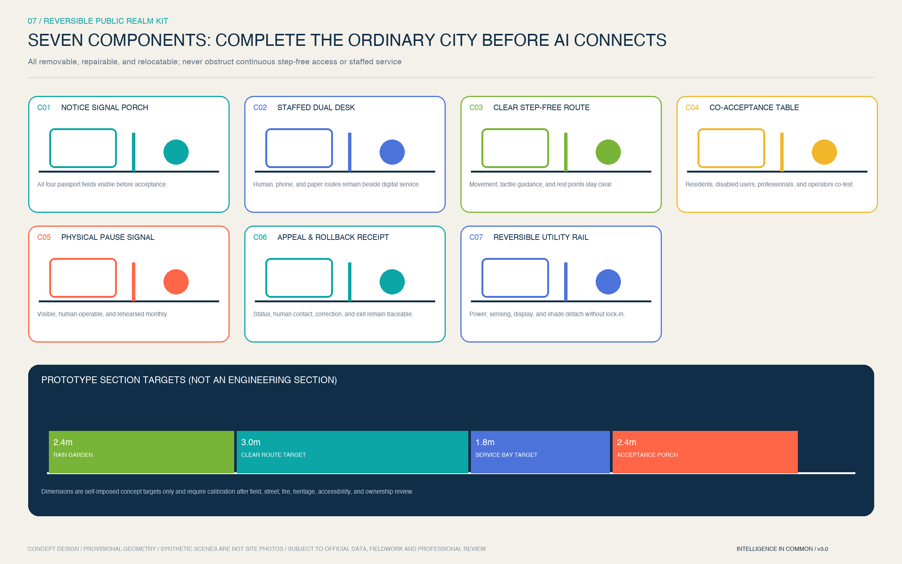
Scenario-specific governance is recorded in geometry/public_space.geojson: risk level, final accountable role, retention rule, audit frequency, success KPI, and pause condition are no longer generic duplicates. Shared pilot targets are: 100% coverage of named responsibility, notice, risk grading, and emergency-stop drills before launch; 100% human final decision for high-impact outputs; zero default biometric capture and zero continuous personal trajectory retention; a target of zero serious safety incidents; appeal acknowledgement within one business day and a target response within five business days. These are operating targets, not current performance or government commitments.
To show that these gates are at least logically executable, the package includes the read-only, zero-network visual/assets/acceptance-runner.js. It reads twelve passports and 24 synthetic tabletop cases. Twelve positive paths must satisfy all four conditions and every red line; twelve negative paths deliberately omit a condition or trigger a red line and must block activation while restoring the no-AI baseline. The current result is 24/24 logic checks passed. field_performance=null and deployment_decision=not_authorized_not_run state plainly that this is neither field performance, resident consent, nor deployment authorization. Any real pilot still requires G0-G4 and independent evaluation.
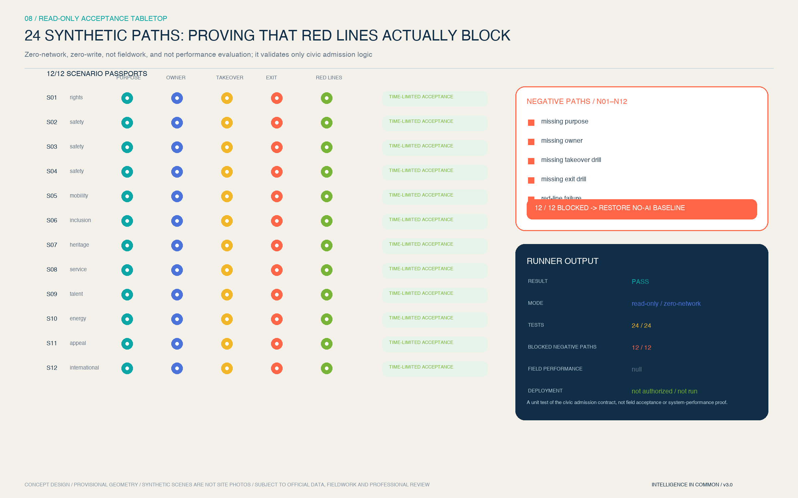
“No phone, account, or face gate for basic access” is the proposal's voluntary public-service baseline Metric, not a legal conclusion for every place. The one-day acknowledgement and five-day target response are likewise not statutory numerical deadlines. The Generative AI rules apply only when a scenario falls within their public content-service scope; Article 39 human-service duties require separate checking for the enumerated medical, social-security, financial, and utility-payment settings rather than a blanket claim.
Land Use, Building Scale, and Retain-Renovate-Demolish Strategy
The land-use structure uses a subset of the national classification and fully covers the submitted boundary with shared partition coordinates. Research land carries full-stack development and open-source translation; education-research collaboration sits near AI Origin; commercial services support technology services and AI-Native life; community services and housing support everyday talent needs; culture and parks form the Jing-Zhang public base. Seven conceptual categories and their areas are represented by Spatial data, while category and subarea metrics remain fully recalculable in the structured layer Metric Metric. These are conceptual carriers, not approved land uses.
The building method has four levels: retain-and-adapt, shared ground floor, reversible insertion, and later renewal when conditions are mature. Without an existing-building or ownership inventory, the sixteen submitted footprints are conceptual capacity units used to test public-space relationships Spatial data. Total conceptual footprint and ratio are recorded by Metric and Metric; neither is an approved Building Coverage Ratio nor a DRR conclusion. Professional deepening must add structural safety, property rights, use, age, fire safety, energy, heritage value, and operating condition building by building.
Massing follows a qualitative rule: low disturbance along the spine, recognizable nodes, continuous background fabric, and differentiated key areas. The commons spine retains a pedestrian scale and readable history. Scenario nodes rely on restrained night lighting, signs, and reversible elements rather than oversize landmarks. Height, intensity, roof form, and skyline require regulatory-plan, heritage, aviation, and landscape controls before determination.
Transport, Rail, Municipal Infrastructure, and Public Services
Spatial data represents a continuous spine, three east-west stitches, and two wing interfaces. ROAD-001 is the walking, cycling, and service spine. ROAD-002-004 correspond to conceptual stitching at Dazhongsi, AI Origin, and Zhongzhiyuan. ROAD-005-006 represent the Technology Services and Scenario Enablement Wings. These lines show connection directions, not road redlines, rail alignments, bridges, or tunnels. The conceptual spine length is recalculated by Metric and awaits official streets, stations, sections, crossings, parking, and fire-access data Depth.
Municipal and public services follow “co-location without conflated authority” for urban infrastructure and New Infrastructure. Edge compute supports low-latency public experience. Energy mirrors show facility-level aggregates only. Distributed energy and sponge-city elements begin with monitoring and demand verification. Every public-service Agent retains a staffed human window. Compute, energy, drainage, utilities, fire safety, and cybersecurity capacity remain uncalculated because capacity data is absent Depth. Services are composed around talent, enterprises, communities, and international visitors rather than a single vendor.

Blue-Green Network, Public Space, and Urban Character
The blue-green network treats the heritage park as the Innovation Belt's “first meeting room.” A continuous green spine supports everyday walking, cycling, rest, open discussion, and cultural reading. Three east-west green stitches connect universities, parks, communities, and stations. Green space is not a liability-free testing ground: every trial requires booking, notice, limited duration, emergency stop, and restoration. River, heritage, green-line, blue-line, and safety controls take priority when official material arrives. Spatial data and Metric describe the conceptual network envelope; Depth describes its professional evidence chain.
Twelve scenario nodes and four conceptual pilgrimage or honour landmarks organize public space. Zhongzhiyuan's Mirror of Safety reveals evaluation methods and correction. AI Origin's Open-Source Star Map records verifiable contribution. Dazhongsi's AI-Native Living Room joins demonstration, appeal, and public experience. The spine's Centennial Algorithm Rings place Jing-Zhang history, Zhongguancun innovation history, and AI-governance milestones side by side. Original geometry, open-source or system type, and reversible facilities avoid portraits, corporate marks, unauthorized images, and spectacle-first placemaking.
Heritage navy, commons teal, and verification orange unify the character. Interfaces prioritize visible ground floors, indoor-outdoor collaboration, and restrained night-time presence. History is not technical decoration: the Jing-Zhang Railway asks how cities connect; Zhongguancun asks how knowledge translates; AI culture asks how technology is publicly governed. Wayfinding displays place, scenario purpose, data boundary, accountable party, and appeal route, making visual identity part of trustworthy operation.
Centennial Jing-Zhang is no longer represented only by an abstract six-part narrative. Official Phase-1 reporting confirms the restored historic main line, retained Qinghuayuan station building, and the reuse of old rails, switches, locomotive, and turntable Source. The 2026 completion notice adds the Jing-Zhang Ring, rail garden, tank car, whistle installation, and fishbone slow-mobility network Source. These are registered as officially reported asset types whose individual coordinates are not claimed.
Qinghuayuan Station Site and Pingsui Xizhimen Station Site form two statutory heritage anchors along the corridor. Beijing Municipal Cultural Heritage Bureau publishes textual protection and construction-control rules for both Source Source. Relative wall lines, object codes, and distances do not replace official attachments and control points. The proposal therefore draws only non-locational rule frames and sets a G0 “zero intrusion until official attachments are ingested” gate; no legal polygon is digitized by inference. PASS borrows interlock logic only to mean that the asset register, coordinate precision, conflict check, and human approval must all close before clearance. It is not railway signalling engineering.
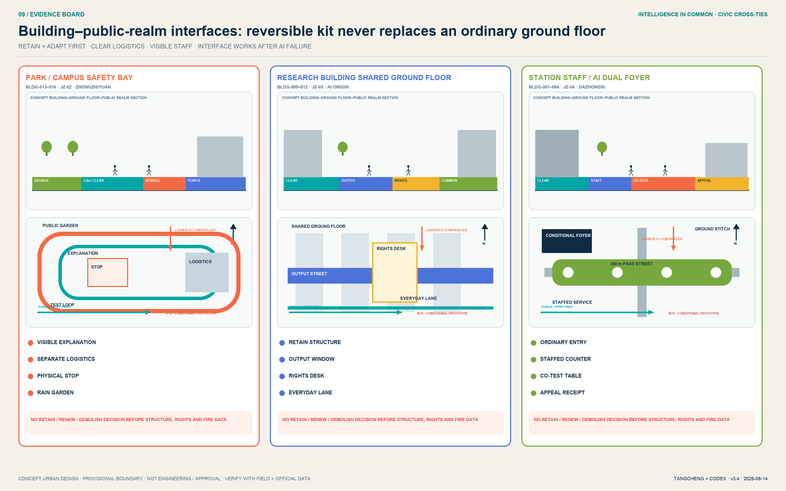
Renewal Projects, Implementation Policy, and Phasing
Eight Conceptual Recommendation projects form a minimum viable combination of space and operation Metric: JZ-01 commons-spine continuity diagnosis; JZ-02 Zhongzhiyuan Safety Acceptance Garden; JZ-03 AI Origin Rights and Contribution Arcade; JZ-04 Dazhongsi Station-City Acceptance Cross-Tie; JZ-05 twelve-scenario public-acceptance protocol; JZ-06 Jing-Zhang contribution and memory nodes; JZ-07 data consent and appeal living room; and JZ-08 annual Open Intelligence Commons programme. Every project first requires missing ownership, road, heritage, municipal, safety, or operating conditions. The list is not project approval or investment commitment. All eight contracts bind named geometry evidence Metric and close a fact–falsifiable-diagnosis–spatial-action–drawing–project–stop crosswalk Metric. This proves desktop evidence structure, not field-valid siting.
Version 3.4 retains the eight project-specific delivery contracts and adds geometry_refs to JZ-01—08. Every project must resolve to a dated public-map feature, a same-coordinate conditional design action, or an explicitly provisional feature; drawing pins can no longer be placed by arbitrary pixels. JZ-02—04 directly reference their preferred actions and A—A traces. JZ-04 remains the single deep pilot with field-verifiable conditions, countable kit, staffable shifts, and quotation slots. Heritage-related JZ-01/JZ-06 additionally require asset-register coverage, coordinate precision, statutory-control information, conflict checks, and human sign-off. Cost bands describe workload and quotation conditions, never invented currency investment. No project may borrow another project's performance or an overall average to pass.

Phasing is a risk sequence, not a construction timetable: protocol first, network second, renewal later. Spatial data covers reversible pilots in the three key areas, with review jurisdiction area Metric. PHASE-002 connects the commons spine, with area Metric. PHASE-003 considers adaptive district renewal only after official data and professional review, with area Metric. Metric recalculates the three stages; Depth and Depth connect projects, dependencies, and evidence.
The first executable move is not district-scale construction but a 90-day travelling public-acceptance pilot in which all three areas begin together but qualify independently Metric. Days 0–30 establish each ordinary-service baseline, conduct accessible walk-throughs, and complete accountability and data registers with no AI activated. Days 31–60 build one removable prototype per area; staff lead offline simulations of pause, fallback, withdrawal, and appeal. Days 61–90 admit only prototypes whose own four conditions and red lines all pass, with daily review and weekly independent acceptance. Zhongzhiyuan first proves “stoppable,” AI Origin “withdrawable,” and Dazhongsi “supported.” Six red-line KPIs are: 100% notice before activation; 100% human-final high-impact outputs; zero mandatory phone, account, or face gates for basic access; human fallback within 30 seconds; appeal acknowledgement in one business day and target response in five; and a target of zero serious safety incidents Metric. A failure pauses only that prototype and restores its ordinary baseline; averages, the other sites, or promotional value cannot conceal harm.
Every project has its own sole A instead of hiding responsibility inside one global RACI: JZ-01 corridor programme lead; JZ-02 Zhongzhiyuan site operator; JZ-03 AI Origin campus operator; JZ-04 Dazhongsi street operator; JZ-05 public-acceptance programme office; JZ-06 heritage interpretation curator; JZ-07 independent appeal-office lead; and JZ-08 commons programme secretariat. Human service, accessibility, safety, data, and legal teams take R by project. Residents, older and disabled representatives, maintenance workers, and an independent evaluator co-accept as C where affected. Cost uses L1 for operations, furniture, and wayfinding; L2 for temporary structures, ground-floor adaptation, and local systems; and L3 only after official conditions. No currency estimate is invented. Procurement requires open interfaces, data minimization, no vendor lock-in, and an exit clause.
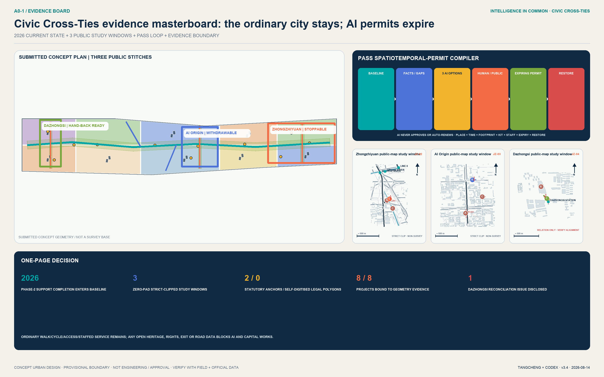
The annual operating cycle has four seasons. Spring Open-Source Contribution Month publishes problems and data licences. Summer Urban Testing Week operates only with isolation, booking, and emergency stop. Autumn Global Open Intelligence Commons Forum compares city cases and governance. Winter Contribution Archive Season reviews failures, corrections, and public value. The developer community operates through issues, post-mortems, and mentoring. Scenario Access follows application, ethics and safety review, time-limited testing, public feedback, and exit. International communication emphasizes verifiable contribution rather than exaggerated rankings.
To prevent “everyone is responsible” from becoming “no one is responsible,” the proposal suggests a conceptual Jing-Zhang Open Intelligence Commons Council. Park and district operators manage access. Universities and research institutions review methods. Enterprises and developers remain responsible for products and incidents. Residents and disabled people's representatives hold questioning seats. Data, legal, safety, and heritage experts hold professional veto recommendations. Government and statutory professional authorities retain their lawful powers. Every scenario still has one named accountable operator. The council never substitutes for statutory approval or dilutes incident responsibility.
Implementation uses gates G0-G4. G0 clears source provenance, copyright, and spatial-data rights. G1 completes professional review of ownership, heritage, transport, municipal infrastructure, fire safety, and accessibility. G2 completes the safety sandbox, public notice, named responsibility, emergency-stop drill, and appeal rehearsal. G3 runs a time-limited pilot and publishes success and failure. G4 uses independent evaluation to adapt, extend, or exit. The eight JZ projects pass through these gates rather than beginning as coloured construction areas. Areas in geometry/phasing.geojson are risk-review jurisdictions, not construction footprints or investment scales.
Metrics, Area Recalculation, and Compliance Matrix
All spatial metrics project EPSG:4326 GeoJSON to EPSG:4548 before calculation Depth. The provisional site area supports package-level internal consistency only Metric. Buildings, green space, and public space are calculated from unioned geometry Spatial data Spatial data Spatial data.
Conceptual public-space area and ratio are recorded in Metric and Metric. Conceptual green-space area and ratio are recalculated from the overlay network Metric Metric. Counts for key areas, scenarios, testbeds, personas, projects, and phases come from structured files or the scenario table rather than promotional copy.
green_ratio is the envelope of a cross-land-use conceptual blue-green network, not the statutory ratio of land-use code 1401. Its four features must be unioned rather than summed. public_space_ratio is the support envelope required by twelve scenarios, not the footprint of halls, pavilions, or equipment. The sixteen building polygons are spatial-prototype footprints; their 0.8% ratio must never be read as existing or approved Building Coverage Ratio. With existing-building data and official polygons, professional teams should separate scenario influence areas, indoor and outdoor public space, and statutory green space before deciding whether these metrics remain useful.
The complete machine-readable metric index remains in metrics.json; prose explains the metrics that affect design judgment. Conceptual building footprints and the commons spine are supported by Metric and Metric. Scenario and phase counts are supported by Metric and Metric.
The award revision adds a non-spatial evidence family that is not current performance. Three differentiated prototypes are managed by Metric, twelve passports by Metric, four interlock conditions by Metric, and seven reversible components by Metric. Twenty-four synthetic tabletop paths and twelve blocked negative paths are managed by Metric Metric.
The 90-day pilot is managed by Metric, and the 30-second human fallback by Metric. One-hundred-percent basic-access coverage without mandatory phone/account/face gates and six red-line KPIs are managed by Metric and Metric. They are self-imposed acceptance contracts. The tabletop proves logic only—never existing achievement, statutory standard, resident consent, or government promise.
compliance_matrix.json covers announcement sections 1.3, 1.4, and 1.5 plus agent.1-agent.6. standard_matrix.json covers mandatory standards and records the unavailable architectural depth document as a data gap. design_depth_matrix.json covers fifteen formal design-depth items. Land use and mobility evidence are managed by Depth and Depth.
Blue-green space and risk boundaries are managed by Depth and Depth. A PASS means the package can enter content review; it does not mean that the proposal is excellent, approved, or implementable.
Risk, Copyright, and Compliance
The first risk is false precision: provisional polygons can change land-use partitions, key-area relationships, and every area, so figures de-emphasize boundaries and prose never calls them precise redlines. The second is planning overreach: FAR, height, density, roads, statutory control lines, ownership, DRR, and engineering remain pending official data; the proposal provides methods and confirmation lists only. The third is technical harm: public AI scenarios limit themselves to aggregated or actively authorized data, require human review for high-impact decisions, and provide stop, appeal, correction, and deletion. The fourth is cultural and copyright risk: historical claims require professional review, and logos, icons, charts, maps, and fonts use original geometry, repository-cleared data, or system and open-source assets.
The submission uses no classified map, commercial map screenshot, remote map tile, news image, personal data, internal corporate spreadsheet, or unauthorized brand material. OpenStreetMap vectors are dated, low-contrast, ODbL-attributed directional context only and support no existing-condition or engineering conclusion. Paired PNG figures, A3/A0 PDFs, offline HTML, GeoJSON, and JSON share one design evidence chain. Three key-area atmosphere images were produced with OpenAI's built-in image-generation tool, contain no text or brand, and are visibly marked “AI-generated concept image / not a site photo.” They prove no existing condition, boundary, resident opinion, or engineering feasibility; structured evidence and professional drawings remain authoritative. visual/index.html uses no remote script, font, form, iframe, API, or tracking. Both runners read local JSON only, make no network request, and write no file. Nine risks and their stop/rollback evidence are registered in risk.json. Copyright and generation notes accompany the pending-control register Spatial data and report/copyright_statement.md. That feature is only a verification envelope along SITE-001 with not_a_control_line=true; it represents neither a published control line nor permission to build. Depth governs data gaps, human review, and replacement with official material.
The external Skill execution surface was also reviewed. No installer writing to personal directories, network scraper, GitHub API script, or external AI review script was used to generate the package. Dependencies remain isolated and use binary wheels. The PR contains only this submission directory, and the authenticated GitHub author confirms attribution, intellectual property, and external submission.
References
Formal task evidence includes the official announcement, rights-cleared Agent taskbook, urban-design measures, regulatory detailed-planning rules, and the territorial spatial-planning land-use classification guide. The Generative AI, barrier-free environment, and older-adult smart-technology documents are used only within their respective applicability boundaries as public-service and risk-governance references. Local snapshots, hashes, and retrieval status are recorded under brief/site-package/standards/. Spatial generation uses only the registered provisional boundaries and explicitly excludes them from official-redline, precise-area, and approval use. International cases remain background mechanisms in sources.json; no enterprise roster, quantified performance, or policy commitment is transplanted.
The machine evidence layer consists of geometry/*.geojson, metrics.json, three matrices, risk.json, the acceptance passports/tabletop/runner, manifest, sources, assumptions, self-check, the two proposal languages, paired PNG figures, paired HTML, and paired PDFs. geometry/constraints.geojson records a verification envelope for missing official controls: it means controls remain unknown and must be obtained, not that they do not exist. Spatial data represents risk sequence rather than a development timetable. The core source links are Source Source Source; the core standards are Standard Standard; the core spatial link is Spatial data, and the core metric link is Metric.